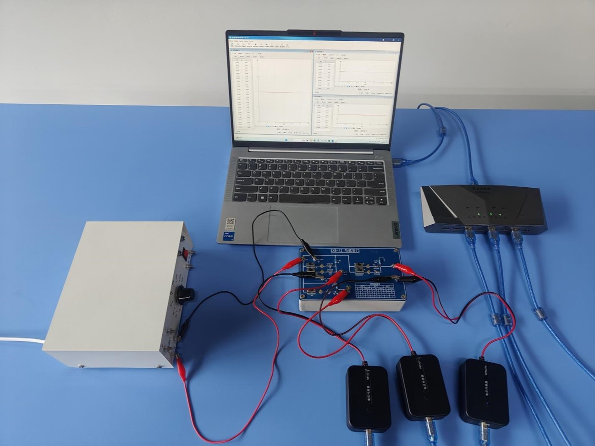
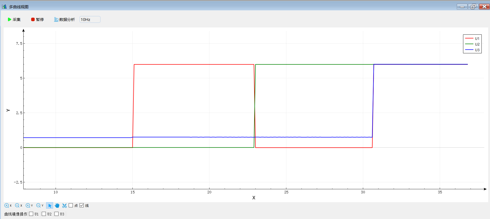
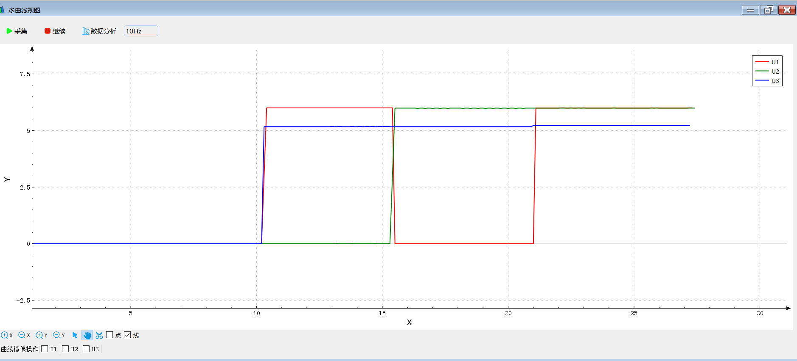
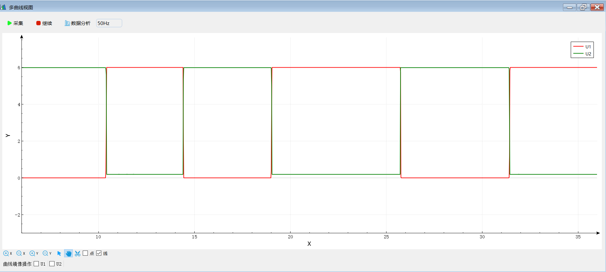

实验三十三 简单门电路研究
【实验目的】
观察与门电路，或门电路、非门电路的工作情况，掌握简单门电路的工作原理。
【实验原理】
门电路是数字电路中用于完成逻辑变换的电路，基本门电路包括与门电路，或门电路和非门电路。其中，与门或门电路可利用二极管的单相导电性配合限流电阻搭建，而非门电路可利用三极管共发射极电路输入输出反相的特性搭建。
【实验器材】
数据采集器、3个电压传感器、“与或非门”电学实验板、学生电源和计算机等。
| 与门电路 | 或门电路 | 非门电路 |
|---|
【实验装置】

【实验操作步骤】
1.在“简单门电路”电学实验板的电源接线柱上接上5V直流电源，按与门实验电路图将电压传感器接线夹夹在电路板的“与门”部分对应接线柱上，将电压传感器接入数据采集器；
2.进入实验数据分析软件，设置电压传感器的采集频率为50Hz，选择“多曲线视图”，将电压传感器采集的数据同时显示在一个窗口；
3.调整电路板上的输入电平调整开关K1、K2，使输入电平分别为00、11、01、10四种组合，观察四种组合对应的输出电平；
4.按或门电路实验电路图将电压传感器接在实验板的“或门”部分对应接线柱上，通过输入电平调整开关设置输入电平分别为00、10、01、11四种组合，观察四种组合的输入电平对应的输出电平；
5.按非门电路实验电路图将电压传感器接在实验板“非门”部分对应接线柱上，调节电平输入调整开关使输入电平分别为0、1，观察两种输入电平对应的输出电平。

与门

或门

非门
【注意事项】
接入实验板的电源电压不能高于实验板规定的电压，以免损坏实验板和传感器。
【思考与讨论】
1.根据实验记录的数据分析几种基本的门电路实现的逻辑功能；
2.分析几种基本门电路的实验电路图，说明各种基本门电路的工作原理。
【自由探究】
基本门电路能实现与或、非几种简单的逻辑功能。数字电路就是以这几种非常简单的基本门电路为基础，实现一些非常复杂的逻辑功能。掌握基本门电路的原理之后，我们就可以通过组合若干种基本门电路来构建电路，实现一些较为复杂的逻辑功能。试一试，看你能用本实验介绍的基本门电路实现哪些逻辑功能。